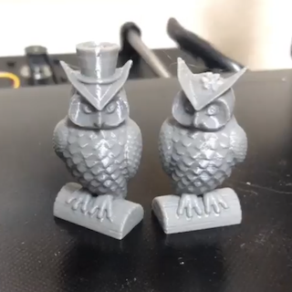
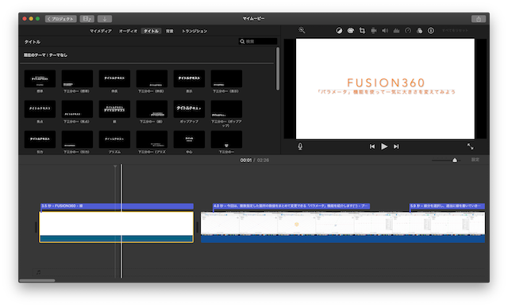

＜３Dプリンター購入＞
Aliexpressでanycubic mega sを買いました（'.'）
plaフィラメント１ロール付きで35000円でした。Amazonで購入するより圧倒的に安いですが、paypal経由で支払いを行わなくてはならなかったり、国際配送なので遅かったりと何かと面倒です。今回は奇跡的に5日で配送されました。
購入して２週間ほど謎のエラーに悩まされていましたが、先日やっと治りました('_')v
もし購入される方がいらっしゃいましたら、[T0 sensor abnormal]というエラーには気を付けてください。奴は悪魔です。

テストで印刷したフクロウちゃんズ
＜動画編集＞
生まれて初めて動画の編集を行ないました。

6月はなにもできなかった感があるので、7月はこれらのものを使って自分の研究及び展示会に展示する作品を進めていきたい。